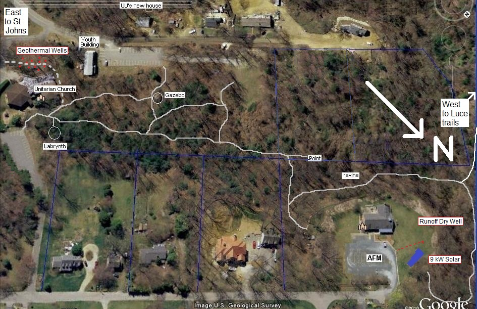

Wind and Solar are crushing Fossil Fuels.
Wind and Solar are crushing Fossil Fuels.
USA Rooftops can provide 40% of the National Electric Load.
We already face major Energy Choices so why not choose the sustainable path?

Building for the Future: Link to the future Meeting House building plans.
Well water test results: In a move to eliminate the negative environmental impacts of bottled water, the meeting is considering returning to our deep well water from the Annapolis Aquifer. Taste tests and other exhaustive tests by the Maryland Department of the Environment indicate our well water is very good. See the Water Test Results, VOC report, Heavy metals report, and the inspector's well log.
Meeting for Learning: Energy Choices - Presented 26 March 2017. Download: Energy Choices Slides (14 meg) or the one page summary.
Disclaimer: This page is not an official minute of AFM but is an attempt to collect our ideas and initiatives on sustainable living.
Download: Slide Presentation presented at Quarterly Meeting 8 Mar 2015 on Solar, Wind, EV's and other clean energy ideas.
Wind and Solar are crushing Fossil Fuels.
USA Rooftops can provide 40% of the National Electric Load.
We already face major Energy Choices so why not choose the sustainable path?
Environmental Heritage: Quakers have a tradition of peace, simplicity and a testimony for the stewardship of the Earth. When clearing the land for our 1992 new meeting house, horse power (a Clydsdale and his birthright Quaker owner from the Eastern Shore) was used for some initial clearing of the land rather than dirty diesel power. It was the scariest thing to me to see a water heater come flying up out of the ravine hitched to a Clydsdale running away at full speed!
AFM Climate Change Minute and Greater Annapolis Group: In 2014 AFM approved a climate change minute that describes human responsibility for the increasing risks being created by global warming and advocates the weaning of our economy from its reliance on fossil fuels. The graphic at right shows to-scale how little air and water we have on earth. We must be concerned. To help extend our concern about the impacts of climate change, and to organize for private and public actions to reduce the burning of fossil fuels, AFM has facilitated the formation of the Climate Stewards of Greater Annapolis -- a group that welcomes everyone in our local area who is concerned about global warming. For more information, contact Phil Favero at pgfavero@gmail.com.
AFM's Green Team: In addition to our outer community focus through Climate Stewards, our Meeting's inward focus is under the care of our new Green Team for what we can do within our Meeting as individuals to meet this global crisis. The October Minutes reflect the purpose, goals and objectives of the team. Baltimore Yearly Meeting has also formed the Unity with Nature Committee and distributed the handout on The Next Steps we can take as individuals to live sustainably.
Rainwater Runoff: AFM supports the state/county initiatives to reduce storm-water runoff. We have no objection to paying the recently enacted Bay-saving runoff fee since it's goal is the same as ours, to clean up our environment. For years we have had rain-barrel collection systems and rain gardens for our building runoff and our parking area was intentionally gravel to help with absorption. What runoff that remains from the parking lot is routed to a 20' deep 10' diameter dry well that prevents any further runoff into the Luce Creek watershed.
 ENERGY: Our peace testamony recognizes the instability of the human condition
in our competition and greed for fossil fuel resources. Around 2009 we began
to consider our fossil/carbon footprint an its impact on our environment and
conflict around the world.
Almost everything we consume to date has originated with the
burning of fossil fuels. This course is simply not sustainable and as a
spiritual society with concerns for our fellow man and woman we hope to do what
we can in sustaining our future for the long term. In our original fossil fuel
burning pie at right, the bulk of our meeting's consumption and damaging emissions
came from coal for electricity, propane for heating, and gasoline
for driving to and from meeting. All of these needs, now in the 21st
century, can be not only be met with clean renewable energy from the Sun
and wind, but they are actually more economical in the long run!
ENERGY: Our peace testamony recognizes the instability of the human condition
in our competition and greed for fossil fuel resources. Around 2009 we began
to consider our fossil/carbon footprint an its impact on our environment and
conflict around the world.
Almost everything we consume to date has originated with the
burning of fossil fuels. This course is simply not sustainable and as a
spiritual society with concerns for our fellow man and woman we hope to do what
we can in sustaining our future for the long term. In our original fossil fuel
burning pie at right, the bulk of our meeting's consumption and damaging emissions
came from coal for electricity, propane for heating, and gasoline
for driving to and from meeting. All of these needs, now in the 21st
century, can be not only be met with clean renewable energy from the Sun
and wind, but they are actually more economical in the long run!

See the LIVE Energy production Supply and Demand in Maryland: The live PJM Grid Market web page shows the current demand and instantaneous cost of electricity. It varies from as low as 3 cents per kWh to as high as $1.25 per kWh depending on Demand and Supply. The figures on this page are in $/MWh so divide by ten to get the cost in cents per kWh that we are more familiar with. In Maryland, we typically pay a fixed price of about 10 cents per kWh which is $100/MWh at the wholesale market. The page also shows the grid mix of fuels and the production from Solar and Wind. It is fascinating to watch the huge variation of prices during the day.
Wind Electricity: See this interactive map of wind turbines across the USA to see how rapidly utility scale wind is developing. Since 2011, AFM signed up for 100% clean renewable wind electricity from our utility via Interfaith Power and Light of DC/MD/VA. They aggregate congregations into collective bargaining to find the lowest cost renewable energy sources. Another organization is Groundswell. This eliminated our use of coal and oil fired electricity. This was as easy as signing a piece of paper and by being a member of the larger faith collective, our electricity was even slightly less than the existing utility electric rates.
Our own Solar Array: But an even better and more direct way to generate clean renewable solar energy is with our own solar panels. So around the same time in 2011 we began to investigate our own system and after a lot of consideration, we went with a 20 year solar lease and in January, 2014, our system was installed. A year later, our net electric bills went from an average of about $1800 a year down to under $300 per year as shown at right. Even months that fully produce and we use zero utility power, there is still the fixed $8 per month service charge. But even the $300 that remiains is coming from the utility wind contract above.
Camp Solar Initiative: AFM and Climate Stewards of Annapolis received the donation of several 40W solar panels from Bryan Murtha of the EV Association of DC. We are using these panels to sponsor an initiative to see solar power used at youth camps to switch from the horrendous waste of fossil fuels in gas/propane lanterns to the 50-to-1 higher efficiency of clean-renewable solar electric lanterns. These panels are avaiable to any youth groups, camps or scouts willing to make an outreach project around them. They are 40 watt panels and provide enough energy to provide garden lamp style night lighting as well as to charge lanterns, cell phones and other electronics in the wilderness. In 2016 we even began contributing them to homeless encampments to help charge their cell phones that they need to find jobs.
EV Charging Support: As we look at our facilities for ways to reduce our carbon footprint, it is easy to overlook our biggest fossil fuel consumption in our spiritual lives which is the gasoline driving to and from meeting. Take 100 cars driving 10 miles on Sunday and as much as 33 gallons of gasoline may be being burned. Far more than it takes to heat the building and light the lights. So, earlier in 2011 we had also taken the initiative to encourage members to consider an electric vehicle (EV) for clean renewable local transportation. Already about 1/3rd of our members were driving hybrids or high mileage cars so it was clear that EV's were the next step for some. To be ready, in 2010 we simply extended two standard 120 volt electric outlets for charging member's cars when driven to meeting. Later in 2016 we added two more including a 240v (L2) outlet. During 2 hours on Sunday, the EV's can replenish from 10 to 30 miles to secure their ride back home for the cost of about 40 cents to a dollar. We have also been able to spread this idea to several other churches and institutions in the area.
Friendly Rides: Fully the largest energy consumption of any church is the fossil fuels burned in attending the weekly gatherings. An early suggestion by the Green Team, then, was to reduce our carbon footprint by carpooling or ridesharing. Although in faith this is easy to say, in practice it is difficult and inconvenient. So to add some interest the idea came up to focus only on a periodic Sunday when we can all try to participate as a friendly, outgoing, and fun event. The name "Friendly Wheels" came up in comparison to our group's "Friendly Eights" where every year we encourage members to share dinners together once a month and get to know each other better. Riding together in the same car is even more intimate! Carl Benson prepared this map showing the distribution of all members and then we developed larger scale maps to make it easier to find each other. Who knows, if this idea caught on in Annapolis, we could share this with the other five surrounding churches and think of the change we could make.
...
 Heatpump vs Propane:
After our success with solar and EV's, our next greatest
fossil fuel consumption was the $4500 average a year for propane heating.
Over the 20 years in our new building, the cost of propane had more than
quadrupled.
In 2013 when oil (and propane) approached $4 a gallon these systems were even more expensive than straight electric resistance heating which has always been the
most expensive kind of heating there is (as shown at right). We had every intention to switch our heating from
propane to an electric geothermal heatpump to get maximum efficiency from our now free (already paid for) solar energy. A heat pump could save nearly 60% of our
heating energy consumption. Geothermal heatpumps deriving their heat from the ground are usually much more efficient than Air-source heatpumps when outdoor temperatures are below 40F (which is almost every night during the winter)...
Heatpump vs Propane:
After our success with solar and EV's, our next greatest
fossil fuel consumption was the $4500 average a year for propane heating.
Over the 20 years in our new building, the cost of propane had more than
quadrupled.
In 2013 when oil (and propane) approached $4 a gallon these systems were even more expensive than straight electric resistance heating which has always been the
most expensive kind of heating there is (as shown at right). We had every intention to switch our heating from
propane to an electric geothermal heatpump to get maximum efficiency from our now free (already paid for) solar energy. A heat pump could save nearly 60% of our
heating energy consumption. Geothermal heatpumps deriving their heat from the ground are usually much more efficient than Air-source heatpumps when outdoor temperatures are below 40F (which is almost every night during the winter)...
But... our building use is unique and unlike home systems. The building is unoccupied overnight and we have no full time staff nor day-school and so the heat is timed down to 58F at night and there is no ramp-up to 68F until the late afternoon and only on days when there is an evening meeting (Sunday excepted). Since the climate in Maryland averages 40F or higher outdoor temperature high in the afternoon during winter months, then, most of our heating (starting in the afternoon) is done at the most efficient time for an air-source heatpump. So we decided to go with a conventional air-source heatpump that would give us (in our unique situation) equal efficiency to geothermal at half the installation cost. Switching our heating from Propane to electric eliminated our average $4900 a year for propane and switched the energy to only an added $1500 for electricity for the heatpumps as shown in the above spreadsheet. Although this is 100% clean energy via our Wind contract with the utility, it is our intention to eliminate this with an addition to our solar array in 2017.
AFM/UU Interfaith Environmental Trail: We are committed to living in harmony with our environment and our small 5 acres of woods and stream. While searching for a home in the 1980's we found our land as an abandoned dump on the outskirts of Annapolis. We are proud of our years of work in cleaning it up and enjoy an annual participation with other local groups to clean up the Luce Creek Watershed. As part of that effort we maintain a nature trail and have connected it to the Unitarian Trail next door.
This trail not only highlights the nature around us but also our many initiatives to clean up our energy, our water and our air. Examples are our solar panels, our rain barrels, our permeable parking lot and rain gardens as well as the many Unitarian initiatives such as their geothermal heating and cooling system and new raingarden and permeable sidewalks.
. . .
 WE CAN DO IT! The amazing thing is that it is CHEAPER to switch our energy systems to
renewable than it is to continue with Fossil fuel! First of all, do not get mislead by arguments
of BREAK-EVEN or PAYBACK since payback is from day-1. See
the the breakeven discussion.
WE CAN DO IT! The amazing thing is that it is CHEAPER to switch our energy systems to
renewable than it is to continue with Fossil fuel! First of all, do not get mislead by arguments
of BREAK-EVEN or PAYBACK since payback is from day-1. See
the the breakeven discussion.
Second, do not be misled that it is too late and it is impossible to get there from here. The slide at right show's one family's wake-up call in 2006 time frame when they realized the nearly 3000 gallons of fossil fuel they were using at ever increasing cost.
At this point by 2015, all of this family's energy consumption has been moved to electric, and all electic is derived from 100% renewable solar or wind. This includes even the electric lawn mower, electric tools, and even an electric boat! And the cost amortized over the next 10 years is cheaper than doing nothing and continuing to pay the utility bills and continuing to pollute our future.
Land Conservation and Nature Trails:
The Annapolis Friends Meeting is located in a natural area in the Luce Creek Watershed off of the Severn River. Their are no roads through the watershed, but there are about a dozen or so churches and other youth oriented areas surrounding the central natural area. As noted above, we have an initiative to connect our nature trails (shown below) to other Faith and Youth groups in the area.

Luce Creek Watershed: In our busy daily lives as wwe zoom up and down Bestgate Road we are hardly aware of the large wilderness area behind us. Even though we may drive all the roads in the area, we probably do not see the size of this last wiilderness area in the Annapolis Area. The Unitarians and Annapolsi Friends Meeting have long been involved in protecting the natural beauty of this area. Although the south side of the creek has been a dumping ground for most of the last century, most of it is grown over and with several clean up weekends, tons of junk and surfrace debris from old cars and appliances and thousnad of broken bottles have been removed. An outline of the overall watershed and shared faith communities is shown below.

------------------------------------------------------------
Return to Annapolis Friends Meeting
. See Sitemap to over 450 of Bob's othe web pages.
.
Bob Bruninga, PE
lastname@usna.edu